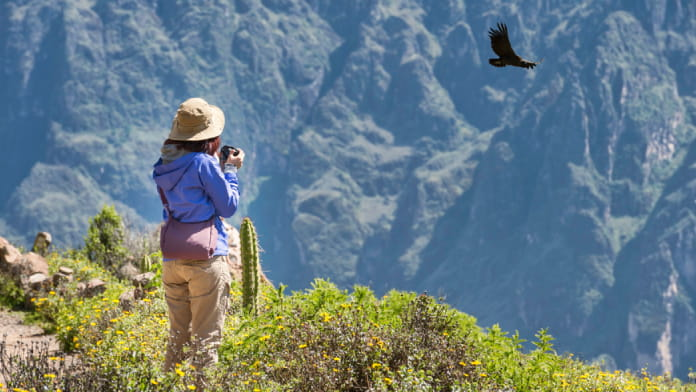
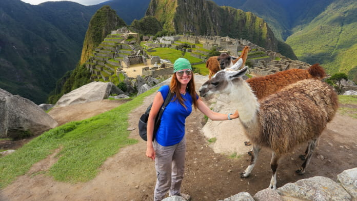
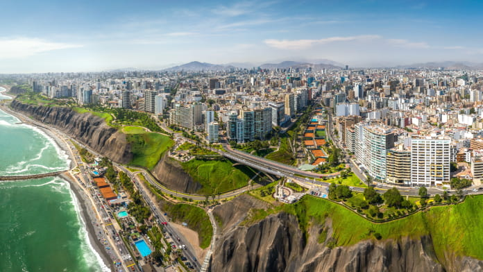
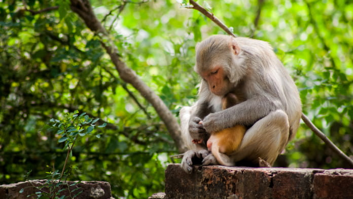
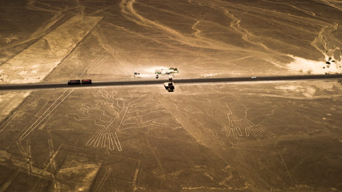

Arequipa: El Cañón del Colca
Arequipa es una de las ciudades más hermosas del Perú y la segunda más poblada, posee hermosas construcciones coloniales, como iglesias, templos, monasterios y casonas de la época de la conquista. Esta bella ciudad es un punto turístico perfecto, pues combina la belleza de su verde campiña con la imponente presencia de sus volcanes y nevados. Entre sus principales atractivos turísticos podemos mencionar el Volcán del Misti, el Cañón del Colca, la Plaza de Armas y el Convento de Santa Catalina. PERU GRAND TRAVEL realiza este servicio Tours a Arequipa.

Cusco: Ciudadela inca de Machu Picchu
Cusco es sin duda uno de los destinos más importantes del país y del mundo, un destino que ofrece a sus visitantes un rico legado histórico y monumental, entre sus atractivos turísticos podemos destacar la Plaza de Armas, el Templo del Sol o Koricancha, las ruinas de Sacsayhuaman, Qenko, Puca Pucara y Tambomachay, el VALLE SAGRADO: Pisac, Calca, Yucay, Ollantaytambo, Urubamba, Chinchero, Maras, caminatas como el camino inca y sobre todo MACHU PICCHU, joya arquitectónica construida con la sabiduría de los antiguos incas. Si deseas viajar sin ninguna preocupación contáctate con PERU GRAND TRAVEL que te llevará recorrer todos los destinos turísticos de Cusco y viajes a machu picchu

Lima: La Ciudad de los Reyes
La ciudad de Lima es la capital y puerta de entrada al país, es uno de los destinos más populares de Sudamérica no solo por la gastronomía sino también por los encantos que tiene para ofrecer, cuenta con numerosas construcciones coloniales, museos, lugares arqueológicos pre-Hispánicos, por otra parte ofrece una gran variedad de shows culturales, folclóricos, centros de diversión nocturna, lujosos casinos, casas de juego y gastronomía peruana. Entre sus atractivos turísticos podemos destacar la Plaza de Armas y el Centro Histórico, el Circuito Mágico del Agua, el Museo de la Nación, sus diferentes centros comerciales y restaurantes.

Iquitos es el destino ideal para los amantes del turismo, la naturaleza y la aventura, ofrece al turista infinidad de opciones, podrá navegar por el río Amazonas y sus afluentes, realizar expediciones a lo profundo de la selva con base en lodges ubicados en plena selva donde estará en contacto con los aborígenes de la zona, podrá también llegar hasta los Parques Nacionales y Zonas Reservadas que poseen una exuberante flora y fauna, indispensable conocer Pacaya Samiria, sin duda un destino turístico imperdible si hablamos de Perú.

Nazca: Las Lineas de Nazca
Este destino es único en el mundo porque está lleno de misterio y misticismo, Nazca se encuentra ubicada en la región centro-sur del Perú, entre sus atracciones más importantes podemos destacar las famosas Líneas de Nazca, enigmático enclave arqueológico ubicado a 450 kilómetros al sur de Lima, donde se puede apreciar enormes figuras geométricas que en perfecta armonía componen dibujos de animales, plantas, objetos, seres humanos y dioses, pero muchas de estas figuras sólo son visibles desde el aire en sobrevuelos. También se puede visitar los complejos arqueológicos de Cahuachi, Estaquería, Chauchilla, Cantayoc y los geoglifos de Palpa. Puedes recorrer todo esto en tour a Líneas de Nazca.
